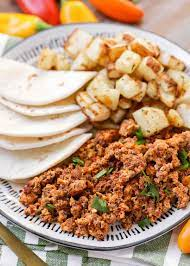

Recepten-hamburge-kippen-zuiveren

ingredienten
- Salade
- tomate
- broodjes
- sla
- peper
- cayennepeper
bereding
- Meng het gehakt met het ei, paneermeel, peper, zout
- Snij de mozzarella in plakjes. Spoel de tomaten en snij ze in plakjes.
- Snij de broodjes open en rooster ze even. Bak of gril de hamburgers goudbruin.